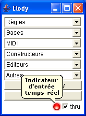
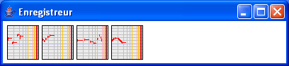

|  |  |
L'enregistreur permet de récupérer des nouvelles expressions qui arrivent en entrée dans Elody. L'entrée temps-réel est une application MidiShare connectée par défaut à l'entrée MIDI et qui enregistre les événements reçus en permanence. Le flux d'événements est segmenté en différents objets lorsqu'un silence d'au moins 3 secondes a été détecté entre 2 groupes d'événements successifs. Lorsque des événements sont reçus sur l'entrée temps-réel, un voyant s'allume en bas du menu principal d'Elody. Une fonction thru permet d'entendre ce qui arrive sur cette entrée.
Les objets enregistrés sont disponibles dans les différentes cases, le plus récent à gauche, le plus ancien à droite. La version actuelle n'enregistre que les événements notes, keyon et keyoff. Les durées des notes et les intervalles entre les notes ne sont pas quantifiés.